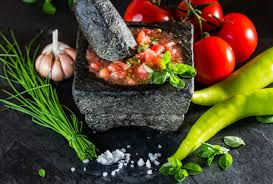

Você conhece o molho lambão?
Saiba o que é esse molho nordestino e aprenda uma receita para levar o tradicional sabor do Nordeste para o prato!
O que é o molho lambão?
O molho lambão é típico da culinária nordestina, sobretudo baiana. É uma espécie de vinagrete caprichado com base de tomate, cebola roxa, pimentão amarelo e bastante pimenta e ervas. Muito aromático, ele é um ótimo acompanhamento para baião-de-dois, feijoada, grelhados, farofa ou simplesmente no arroz e feijão do dia a dia. Também é uma boa opção de acompanhamento para churrasco!
Ingredientes
- ½ maço de coentro
- ½ maço de cebolinha
- 2 tomates maduros
- 1 cebola roxa
- 1 pimentão amarelo
- 6 pimentas malaguetas amassadas
- 3 pimentas-de-cheiro amassadas
- Sal a gosto
- Azeite a gosto
- Vinagre de vinho tinto (pode usar o de vinho branco também)
- Suco de 1 limão
- No pilão, amasse as pimentas até virar uma pasta
- Junte a pasta de pimenta com todos os temperos picados, coloque sal a gosto e misture
- Esprema o limão e coloque bastante azeite
- Coloque vinagre de vinho
- Misture tudo muito bem
- Deixe descansar por 1 hora na geladeira
- Sirva na temperatura ambiente
Modo de preparo:
